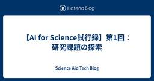
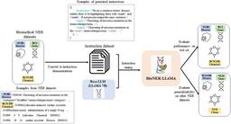
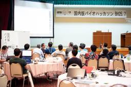

Science Aid Tech Blog
https://blog.fuku-inc.com/
Science Aid Tech Blog
フィード

【AI for Science試行録】第1回：研究課題の探索
Science Aid Tech Blog
Science Aidの鈴木です。隔週でAI for science情報を共有していこうと思ってます。 今回は、難しいタスクだとは思いつつ、研究課題を考える材料として、AIエージェントによる文献調査能力とアイデア提案能力を使ってみました。 AI for Scienceタスク 「酸化ストレス」を対象とするドライ研究の新規課題候補を見つける。 「酸化ストレス」は幅広い生物種に存在する仕組みで、研究量や研究領域が非常に多い分野。 2025年の現在における、解決/未解決情報を改めて整理したい。 上記を踏まえて、現在のドライ研究者はどこの領域を課題とすべきか、アイデアを調査したい。 使ったAIエージェン…
2日前

文献からの遺伝子名認識について
Science Aid Tech Blog
fukuリサーチャーの鈴木貴之です。本日は、文献からの遺伝子名認識と抽出についての調査結果を紹介します。 遺伝子名認識技術の重要性 遺伝子研究は日々進展しており、特に非モデル生物（研究が十分に進んでいない生物）に関するゲノム・遺伝子機能の理解は、今後の大きな発展が期待される分野です。こうした研究を支える基盤として、先行研究の調査は不可欠であり、PubMedをはじめとするライフサイエンス系の文献データベースが広く活用されています。 しかし、こうした文献データベースを用いた遺伝子名での検索には課題があります。PubMedのAutomatic Term Mapping（https://pubmed.…
3日前

2025年BioHackathon国内版参加報告 by suzuki
Science Aid Tech Blog
先日、DBCLS（ライフサイエンス統合データベースセンター）主催の「2025年BioHackathon国内版」に参加しました。本記事はその参加報告です。 DBCLS は、2007年からライフサイエンスデータの利活用を目指したデータベース開発を行っている機関です。特に知識グラフを活用した情報統合に力を入れており、様々なデータベースやツールの開発に取り組まれています。 BioHackathonとは? BioHackathonは、ライフサイエンス研究に携わる様々な分野の研究者、技術者、エンジニア、学生などが集まり、お互いに協力しながらデータベースや関連技術を活用して、研究や開発を集中的に進める場です…
3日前

論文の著作権や再利用について
Science Aid Tech Blog
fuku株式会社の鈴木貴之です。ライフサイエンス分野のデータ利活用促進を目指して研究を行っています。最近は特に論文内で表現される情報の再利用促進に興味を持っています。 論文の発行数は年々増えており、一部の研究者からは人間の手に負える出版量を超えているという意見も出てきています（例: https://arxiv.org/pdf/2309.15884）。膨大となりつつある論文情報ですが、その中から適切な論文に網羅的かつ効率的にアクセスし利活用できるかどうかが、研究促進や発展に欠かせないと考えています。 先行研究の調査や引用のために論文が用いられることはもちろんですが、近年では、先行知見の統合解析、…
1ヶ月前
第3回 Science of Science研究会に参加した話
Science Aid Tech Blog
こんにちは、リサーチャーの鈴木貴之です。fuku株式会社にて研究活動を行っており、学生時代はバイオインフォマティクスを中心に研究していました。現在は、ライフサイエンス研究（特に論文）を対象とした研究に取り組もうとしているところです。そんな中で代表の山田からのお勧めにより、第３回のScience of Science研究会に参加する機会を得ました。本記事では、その参加報告を兼ねて、感じたことや考えたことをまとめてみます。 Science of Science（SciSci）とは？ SciSciとは、その名の通り科学を研究する学問分野です。Science of Science第２回研究会Webpa…
1ヶ月前
2025年 第39回人工知能学会（JSAI）
Science Aid Tech Blog
こんにちは、fuku株式会社のリサーチャー鈴木貴之です。AIの勉強のため、初めて人工知能学会 (JSAI) に参加しました。これまでは主に生命科学の学会に出ることが多かったため、今回はとても新鮮な体験でした。さまざまな方々のAIに対する考え方や活用事例、開発・応用の研究に触れることができ、大変ながらも充実した４日間となりました。 第39回JSAI at 大阪国際会議場 全体的な感想 学会では最大17のセッションが同時に進行していて、気になる講演も多かったので、どこに行こうか迷う場面が多々あったのですが、JSAIは全ての講演が録画されているため、後日視聴できる点が非常に助かりました。全てを見返す…
1ヶ月前
bolt.newを使ってみた話
Science Aid Tech Blog
fuku株式会社でインターンをしております、松澤と申します。普段は博士課程学生として、「LLMを用いたバイオインフォマティクス解析環境の自動構築」というテーマで研究を行っています。 今回は、AIを用いたWebアプリケーション開発サービスのbolt.newを利用した感想を記したいと思います。 背景 ある業務において、ワークフローの実行ログを管理するWebアプリケーションを実装することになりました。このアプリケーションには、主に以下のページを実装することが求められました。 今までの実行記録を一覧として閲覧するページ 各実行記録の詳細を閲覧するページ 実行したワークフローを構成するプロセス間の依存関…
4ヶ月前
Nature誌の論文はbioRxivにPreprint版があるか？
Science Aid Tech Blog
背景 基盤モデルの発達により論文を扱ってさまざまなことができるようになりました。 しかし、ライフサイエンス領域において未だオープンアクセスが世の主流とは言えません。 そのため論文テキストの解析を行う場合、以下のいずれかの選択をする必要があります。 オープンアクセス論文に限って全文を解析 有料ジャーナルも含めてTitle, Abstractのみを解析 そして、どちらのアプローチを取っても片手落ち感が出てしまいます。 論文を対象とした解析の話題になると、結局いつも「有料ジャーナルの全文読めないとね...」となるのが定番でした。 きっかけ 先日、文献をLLMで解析されている方とディスカッションをしま…
10ヶ月前
LangChainを使ったSPARQLクエリ生成
Science Aid Tech Blog
はじめに fuku株式会社にてインターンをしています、鈴木です。本業は広島大学のゲノム情報科学研究室にて大学院生をしております。研究を進める中で「文献からの情報抽出」や「LLMの活用」に興味を持ち、関連の深いfuku株式会社で働かせていただいています。 本記事では、LLMを活用することで、自然言語を入力とし、適切なSPARQL（グラフデータベースへのクエリ文）を出力できるかどうかを試した過程を公開します。 背景・課題 グラフデータベース（RDF）にデータを問い合わせる際には、SPARQLと呼ばれるRDF専用の問い合わせ言語を使い、クエリを作る必要があります。 例えば、日本版DBpedia（wi…
1年前
【学会データベース構築 第1回】LangChainとPydanticによる構造化
Science Aid Tech Blog
はじめに 初めまして、fuku株式会社 代表取締役の山田です。本連載は学会の講演情報を自動で収集し、データベース化する過程の試行錯誤を公開するものです。 身近なニーズがある、個人的に関心があるなどの理由で学会の講演情報を対象としていますが、本企画の真の目的は多様かつ非構造的なテキスト情報を統一的なフォーマットに整形することができるか可能性を探ることにあります。本記事に辿り着いた方の中には論文、実験ノート、社内文書などの多様なテキストを取り扱いたいと考えている方がいらっしゃるかと思います。本企画の内容が、皆様の参考になれば幸いです。 背景・課題 発端は製薬企業の方とお話をしていた時に「学会の講演…
2年前